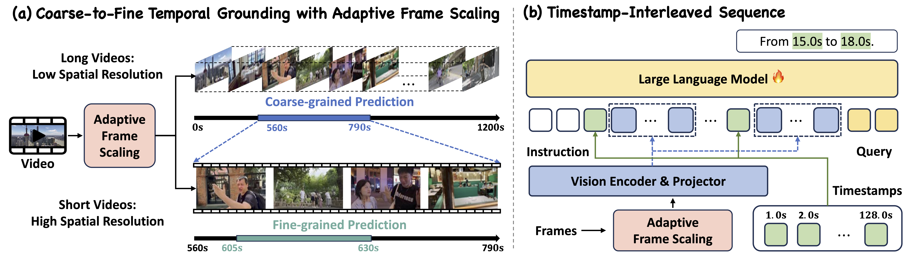
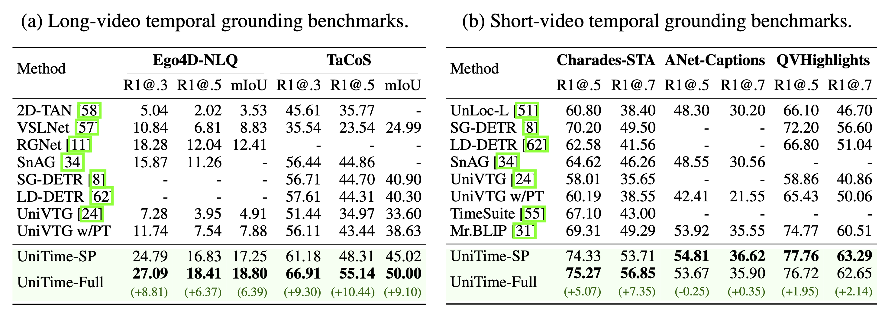
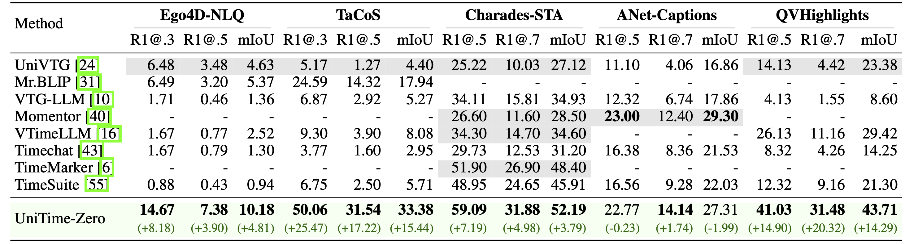
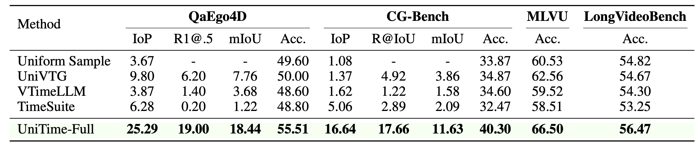
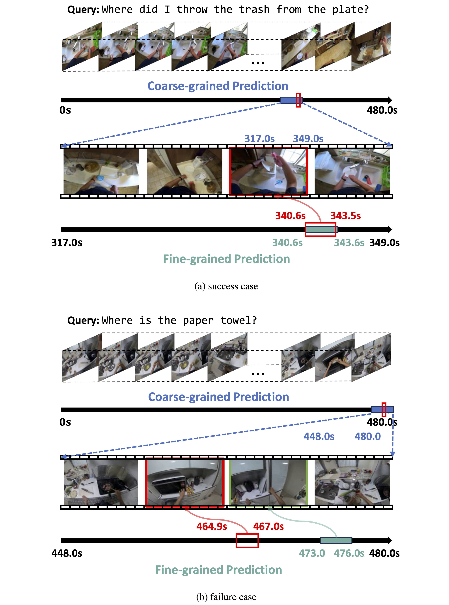

UniTie
: Universal Video Temporal Grounding
with Generative Multi-modal Large Language Models
|
1School of Artificial Intelligence, Shanghai Jiao Tong University
|
2ByteDance
|

The UniTime framework empowers MLLMs with advanced universal temporal grounding capabilities.
(a) UniTime can handle diverse videos with various views, genres, and durations, as well as comprehend complex language queries.
(b) UniTime achieves universal temporal grounding through a coarse-to-fine approach.
(c) Performance comparison on temporal grounding and video question answering benchmarks demonstrates the superior capabilities of UniTime.
Abstract
This paper presents a computational model for universal video temporal grounding, which accurately localizes temporal moments in videos based on natural language queries (e.g., questions or descriptions).
Unlike existing methods that are often limited to specific video domains or durations, we propose UniTime , a robust and universal video grounding model leveraging the strong vision-language understanding capabilities of generative Multi-modal Large Language Models (MLLMs).
Our model effectively handles videos of diverse views, genres, and lengths while comprehending complex language queries.
The key contributions include:
(i) We consider steering strong MLLMs for temporal grounding in videos. To enable precise timestamp outputs, we incorporate temporal information by interleaving timestamp tokens with video tokens.
(ii) By training the model to handle videos with different input granularities through adaptive frame scaling, our approach achieves robust temporal grounding for both short and long videos.
(iii) Comprehensive experiments show that UniTime outperforms state-of-the-art approaches in both zero-shot and dataset-specific finetuned settings across five public temporal grounding benchmarks.
(iv) When employed as a preliminary moment retriever for long-form video question-answering (VideoQA), UniTime significantly improves VideoQA accuracy, highlighting its value for complex video understanding tasks.
UniTime Architecture

Overview of the proposed UniTime framework. (a) Model{} achieves universal temporal grounding by leveraging adaptive frame scaling to construct multi-scale video inputs and then generate multi-scale predictions, allowing robust grounding across diverse video durations.
(b) Within the model architecture, UniTime constructs an interleaved sequence of timestamps and scaled frame features, which, combined with the language query, is fed into the LLM and then identifies the corresponding temporal interval from the timestamp tokens.
Results
Quantitative Results

Comparison with SoTA methods on video temporal grounding benchmarks.
SP denotes the dataset-specific fine-tuning setting, and Full refers to the universal pre-training setting.
Best results are in bold. Improvements of UniTime-Full over SoTA are highlighted in green.

Zero-shot performance on video temporal grounding benchmarks.
Zero indicates zero-shot. All models are evaluated in the zero-shot setting.
Numbers in gray are sourced from the original paper; all others are tested by us using their released code and checkpoints.
Improvements of UniTime-Zero over SoTA are highlighted in green.

Performance on VideoQA benchmarks.
R@IoU is the mean Recall@1 at IoU thresholds [0.1:0.1:0.5]. For grounded VideoQA, IoP and mIoU are used as grounding metrics.
Qualitative Results

Qualitative Results for long-video temporal grounding on the Ego4D-NLQ benchmark.
Red indicates the ground truth (GT), blue denotes the results of coarse-grained segment retrieval, and green represents the results of fine-grained temporal grounding.
Welcome to check out our paper for more technical details and results!
Acknowledgements
Based on a template by Phillip Isola and Richard Zhang.